Fixture strategy
Custom Workholding
Hydraulic, pneumatic, manual, 3-axis, 4-axis, 5-axis, tombstone, gaging, and testing fixtures built around the part, process, and operator.

What it covers
Purpose-built around geometry, material, tolerance, and production use.
Zeman designs and manufactures custom workholding fixtures for multiple industries, from basic holding to complex high-density fixtures for production machining, supporting parts from ounces to tons.
- Prismatic and rotational workholding
- Robot-friendly loading and chip-shedding components
- Self-flushing and cleaning capabilities
- Hydraulic, pneumatic, and manual manufacturing experience
- Simple and multiple feature functional gages

Workholding fixtures
Zeman designs and manufactures custom workholding fixtures for multiple industries, from basic holding to complex high-density fixtures for production machining, supporting parts from ounces to tons.
Tombstone fixtures
Tombstones and fixture bases can be cast iron, weldments, or bolt-together builds, then machined to specific configurations including T-slot, cross-plain, modular, and custom layouts.
Gaging and testing equipment
Testing and gaging equipment can confirm dimensional specifications through functional gages, variable gages, CMM gages, and tight-tolerance grinding support.
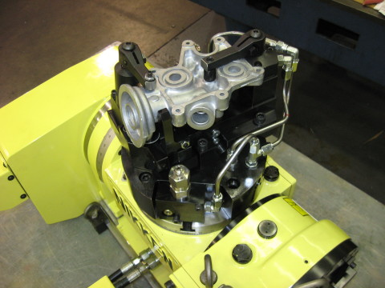
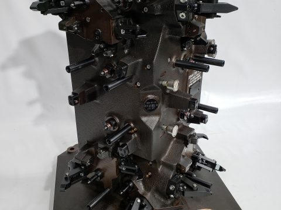
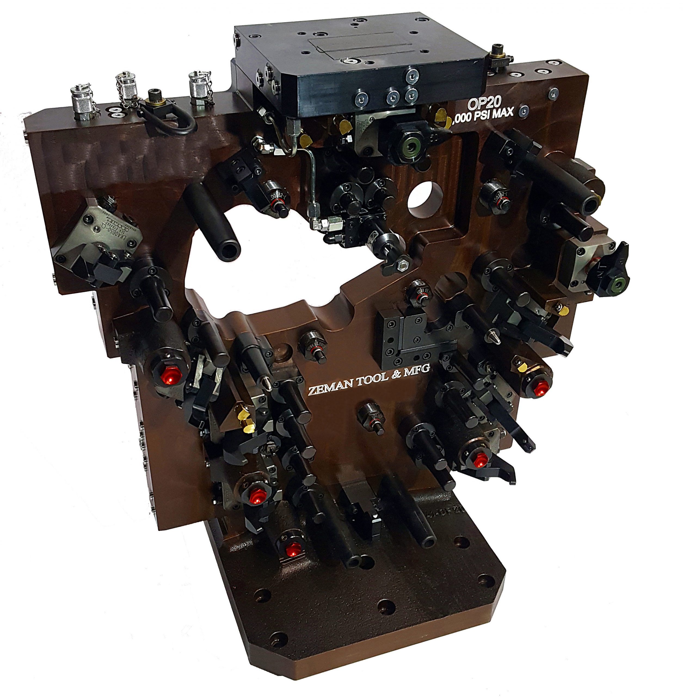
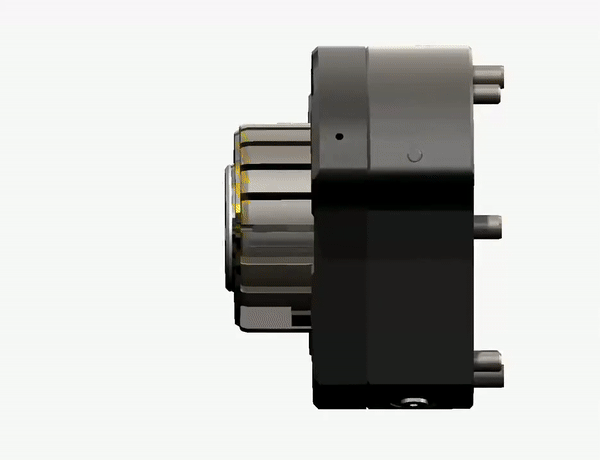
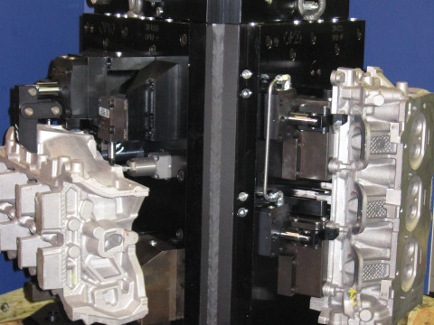
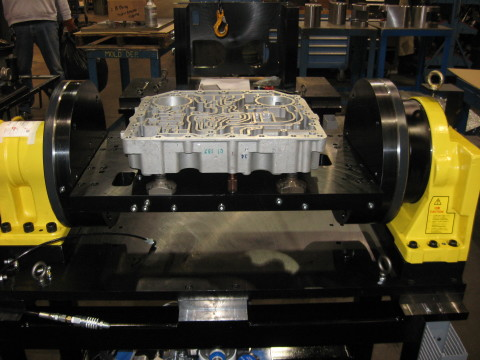
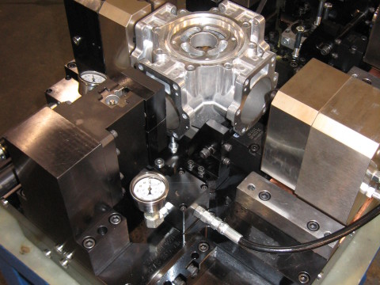
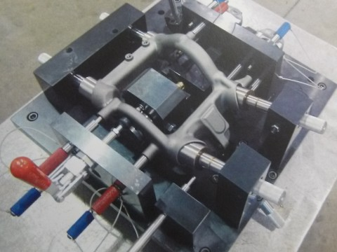
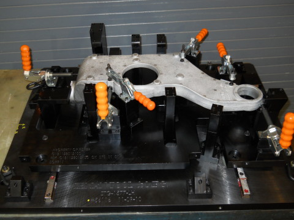
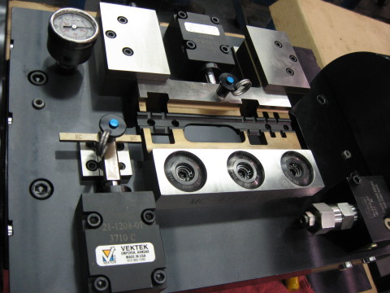
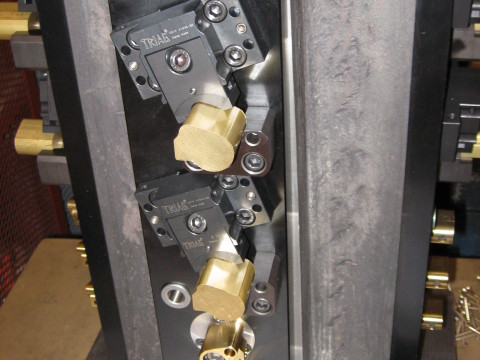
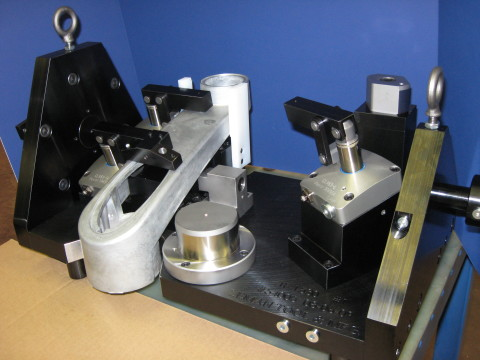
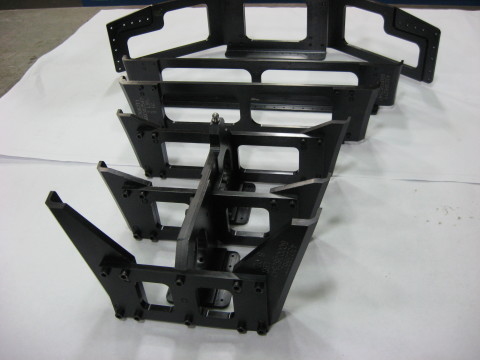
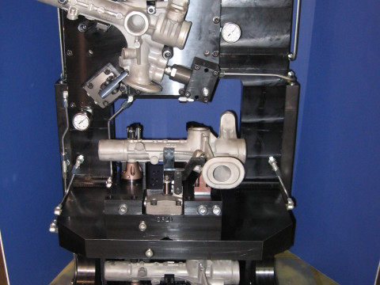
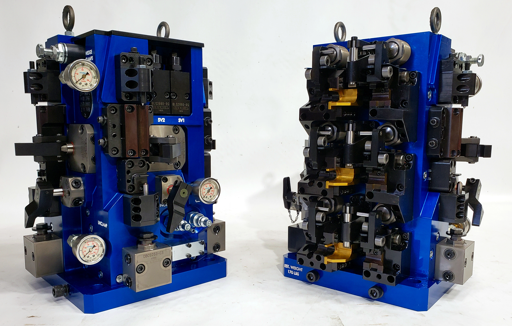
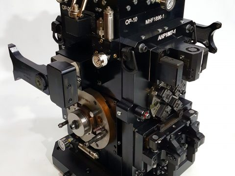
Start the conversation
Send the files, specs, timing, and must-haves.
The RFQ form stays static-site friendly and posts through the existing Formspree endpoint.